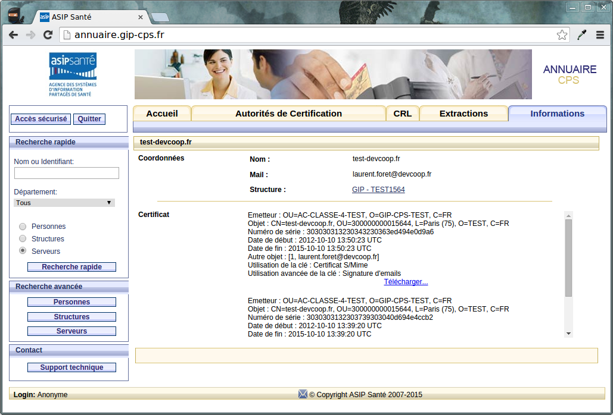
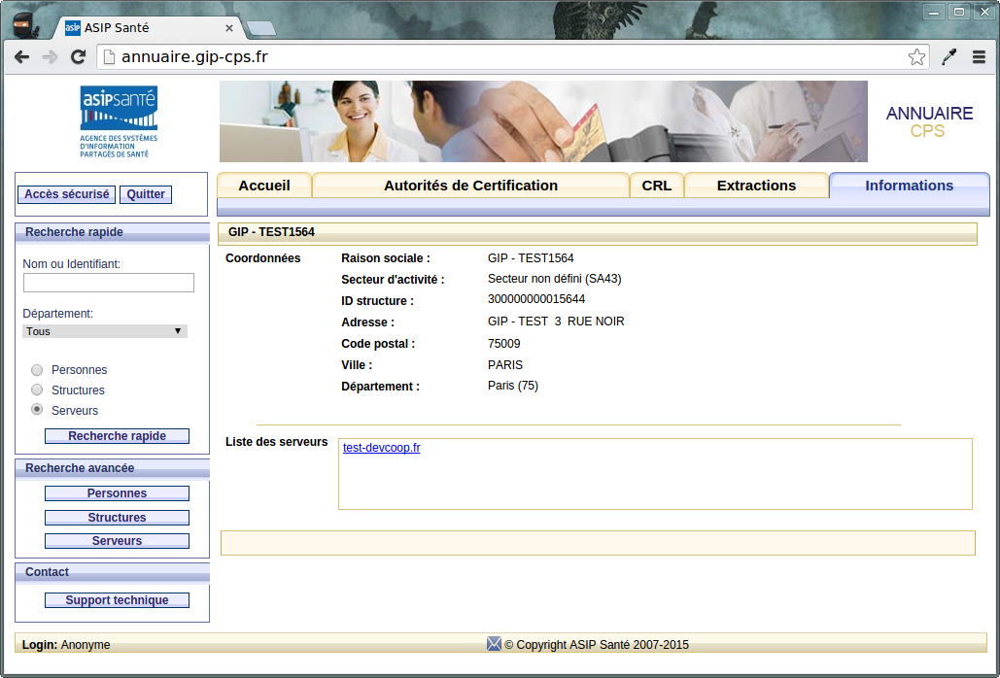

DMPCProxy Configuration
Installation
%> wget http://repo.dev.coop/nexus/content/repositories/snapshots/fr/devcoop/dmpc/dmpc-proxy-ws/3.x/dmpc-proxy-ws-3.x-bin.zip %> unzip dmpc-proxy-ws-3.x-bin.zip %> cd dmpc-proxy-ws-bin
Configuration du serveur Proxy
Le serveur proxy-ws est une application spring-boot configurable par l'intermédiaire d'un fichier application.yml. Les paramètres configurables sont, l'url du serveur DMP, les informations concernant les certificats serveurs, ...
Exemple :
dmpc:
# url du serveur DMP
url.prefix:
https://dev1.lps2.dmp.gouv.fr/si-dmp-server/v2/services
Le wsdl du serveur est accessible (modulo la configuration de port dans le fichier application.yml) à l'url suivante : http://localhost:9999/services/dmpcProxy?wsdl
Certificats serveurs
Le fichier de configuration application.yml fait état de 2 fichiers contenant les keystores suivant :
- un keystore SSL : contenant la clé privé et le certificat permettant la connexion TLS avec le serveur DMP
- un keystore SMime : contenant la clé privé et le certificat permettant la signature du VIHF (Vecteur d'Itentification et d'Habilitation Formelle) et des soumissions.
Ils correspondent à ce que nous pouvons trouver sur l'annuaire du GIP-CPS :
A ce certificat serveur correspond le secteur d'activité RPPS SA43, c'est celui là qui doit être utilisé pour structureActivite de l'auteur :
